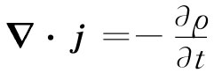

我们首先考虑怎样来理解磁力对载流导线的作用。为此，我们先给所谓电流密度下个定义。电流是电子或其他电荷的净漂移或净流动所形成的运动。我们可用一个矢量来表达这一种电荷流动，这矢量给出每单位时间通过垂直于流动方向的单位面积元的电荷量（正如我们对于热流所曾做过的那样），我们称之为电流密度 ，并用矢量j来表示，它的方向沿着电荷运动的方向。如果在材料中某处取一小面积ΔS，则单位时间流经该面积的电荷量为
j·nΔS， （13.2）
式中n是垂直于ΔS的单位矢量。
这电流密度与电荷的平均流动速度有关。假设有一个电荷分布，它的平均运动就是一个速度为v的漂移。当这一分布通过一面积元ΔS时，在Δt时间内流经该面积元的电荷Δq，等于包含在一个底面为ΔS、高度为vΔt的平行六面体内的电荷，如图13-2所示。这个平行六面体的体积就是ΔS在垂直于v方向上的投影乘以vΔt，若再乘以电荷密度ρ，就将给出Δq。这样，
Δq=ρv·nΔSΔt.
于是单位时间通过的电量为ρv·nΔS，由此可得
j=ρv. （13.3）
图13-2 如果具有密度为ρ的电荷分布以速度v移动，则单位时间流经ΔS的电荷为ρv·nΔS
如果该电荷分布是由单独的电荷、比方说电子组成的，其中每个电荷各具有电量q，并以平均速度v运动，则电流密度为
j=Nqv， （13.4）
式中N为单位体积的电荷数目。
单位时间通过任一个面S的总电量称为电流 I。它等于通过该面的所有面元的流的法向分量的积分
I=∫S j·ndS （13.5）
（见图13-3）.
图13-3 流过S面的电流I为∫j·ndS
从闭合面S流出来的电流I代表电荷从面S所包围的体积V内离开的速率。物理学的一个基本定律为：电荷是不灭的 ；它永不消失也永不被创造。电荷能够从一处移至另一处，但却从未出现过无中生有的情况。我们说电荷是守恒的 。如果有一个净电流从一个闭合面流出，则其内部的电荷就应相应地减少（图13-4）。因此，我们能够将电荷守恒律写成
内部电荷则可以写成电荷密度的体积积分：
Q内 =∫在S内之V ρdV. （13.7）
图13-4 j·n对整个闭合面的积分，等于内部总电荷Q的变化率的负值
如果应用式（13.6）于一个小体积ΔV，那么我们便知道左边的积分为▽·jΔV。其中的电荷为ρΔV，因而电荷守恒律也可以写成
 （13.8）
（再一次是高斯数学！）。